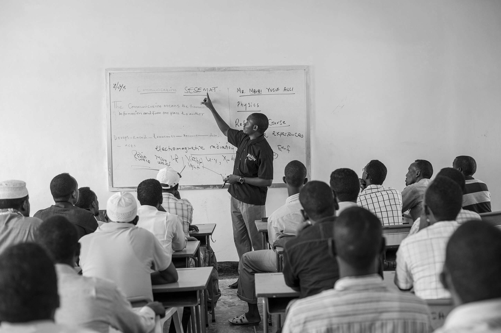
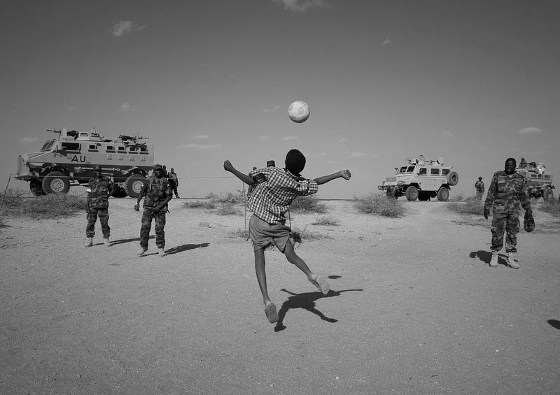

What role do children play in conflicts around the world?
...children are considered to be convenient, cheap, and expendable tools.- Regilme, S. & Spoldi, E [2]
A Review of Mercy Corps' Somali Youth Learner's Initiative (SYLI)
Overview
In an attempt to decrease youth recruitment by rebel groups, from 2011 to 2017 the SYLI program improved access to secondary schools and youth civic engagement opportunities across Somalia. Mercy Corps concluded that this intervention successfully reduced youth support for rebel groups [3].
Why Somalia?
Somalia has been experiencing a civil war for over three decades, and has consistently ranked amongst the highest recruiters of child soldiers [1][2]. In 2017, the UN reported that "a total of 2,087 boys and 40 girls were recruited and used" during the Somali conflict [4].
Why Schooling and Civic Engagement?
Mercy Corps implemented this program to test the assumptions that increasing education and civil engagement opportunities could decrease youth support for rebel groups by:
- building the youth's trust in their government's ability to provide services, and
- demonstrating the potential for nonviolent political action.
Methodology
The SYLI program opened 60 schools in Somaliland, Puntland, and South Central Somalia, targeting an estimated 45,000 Somali youth between 15 and 24 years old.
The SYLI program also trained 2848 youth, both enrolled and not enrolled in school, on conflict analysis, team building, and leadership. These "youth leaders" were then supported in planning and executing "youth-led community action projects that would highlight the value of civic participation ... and model the principles of ... peaceful action." [3]
Survey
To evaluate the impact of the SYLI program, Mercy Corps conducted a survey that asked a subset of the population (both in- and out-of-school youth) about their willingness to lend moral and material support to rebel groups, amongst other things.
These youth were matched using propensity scores based on their characteristics prior to the intervention, and were themselves selected from eight communities (three of which had no intervention, three of which received education only, and two of which received both education and civic engagement opportunities).
These communities were selected by a matching process based on their:
- level of urbanization,
- level of violence, and
- type of intervention (education, civil engagement, both, none).

Results
Mercy Corps found evidence that their intervention decreased youth support for rebel groups through a host of causal mechanisms such as increasing optimism about future livelihood prospects, increasing confidence in non-violent tools for change, and increasing confidence in government.
Notably, however, this conclusion contrasts with their previous work in Somaliland, where they determined that the SYLI program increased support for political violence. They explain these differences by suggesting that they are driven by the relative stability/security of the communities. In places where weak institutions exist, increased education may deepen grievances [3].
Proposed Improvements to the SYLI Program
This intervention and its evaluation suffer from four primary issues:
- Biased Community Selection
- Spillover Effects and Self Selection Bias
- Small Sample Size and a Lack of a Baseline
- Unclear Impact on Youth Recruitment
Biased Community Selection
Mercy Corps and officials from the Ministry of Education handpicked the communities where the program would be applied, thus introducing bias.
For example, if they chose to operate in communities where there is less rebel activity, the findings may instead reflect that youth who are less likely to interact with rebels are also less likely to support them. To control for this in the survey, Mercy Corps implemented a matching process, however, they only considered three characteristics, which is not rigorous.
A randomized controlled trial solves this issue. After identifying communities that could receive the intervention, the intervention should have then been randomly assigned. This would have allowed researchers to appease those that only want to operate in communities where they expect success, while rigorously controlling for confounding variables.
Spillover Effects and Self Selection Bias
Mercy Corps’ control group included youth who were not directly involved in the SYLI program but lived in communities that received the intervention. The inclusion of these youth potentially introduced spillover effects into the analysis. For example, youth that were not directly involved in the programming may have been influenced to change their attitudes by friends that were involved in the program, and thus do not constitute an ideal control group.
Assuming the SYLI schools were open to all, another key issue is that by including youth that chose not to attend an available school, Mercy Corps is selecting for that choice and any potentially associated variables, such as attitudes towards education, attitudes towards the state, distance from the school, and wealth. Any of these variables could correlate with attitudes towards rebel groups and thus be the real drivers behind Mercy Corps' findings. To control for this, Mercy Corps matched respondents based on their initial characteristics, however, since there is no transparency about what those characteristics were, this matching process cannot be assumed to be rigorous.
Building on the randomized controlled trial, a clear solution is to only sample out-of-school youth in communities where no schools were built. Given that out-of-school youth may be difficult to access for Mercy Corps, a downside to this method is that it limits the sample size. Thus another, though admittedly weaker solution, is to include a binary control variable for whether or not an SYLI school was available in the child's community, to accompany the variable that indicates whether or not they are in- or out-of-school.
Small Sample Size and a Lack of a Baseline
As a result of the matching process, and safety and accessibility concerns, Mercy Corps artificially reduced their sample size to only 8 communities. This selection process naturally introduced bias as they selected for more stable communities. This is an issue, especially when considering Mercy Corps’ prior research which showed that, in the less stable Somaliland, the SYLI program increased support for political violence.
Another key issue is that Mercy Corps only conducted one sample. Thus, it is unclear whether or not Mercy Corps' findings reflect changes in attitudes due to the program, or reflect the initial attitudinal differences between youth who chose to engage in the program or not.
A solution to these issues is to randomly sample the population at the start of the program and at multiple points throughout its duration. Multiple random samples would have allowed Mercy Corps to make stronger claims about the the program’s impact on changes in attitudes, and, in the event that some communities became too dangerous or inaccessible over time, this method would have allowed researchers to collect at least some data from these communities, which could be used to infer short-term effects.
Furthermore, Mercy Corps stated that the SYLI program provided training to over 3000 teachers. If these teachers were also trained to conduct surveys, the sample size (at least for children in-school) could be significantly increased, allowing aid workers to allocate resources to survey out-of-school children, who are likely harder to sample.
Unclear Impact on Youth Recruitment
Underpinning Mercy Corps' intervention, and the subsequent evaluation, is the assumption that children choose to become soldiers. This completely ignores the fact that children, especially in Somalia, are often abducted and forced to fight in wars [1][2].
Even if Mercy Corps' findings were more rigorous, given that children are abducted, a decrease in youth support for rebel groups does not necessarily correspond to a decrease in youth recruitment. In fact, there are many potential causal pathways through which the SYLI program could have increased youth recruitment.
For example, Al-Shabaab, the primary rebel group of interest at that time, has been known to abduct groups of children directly from schools. Implementing a nationwide school program, without significant security measures, may have simply made it easier for abductions to occur. If significant security measures were introduced to protect children at SYLI schools, this further complicates Mercy Corps' findings. Did the in-school youth change their attitudes because of education or because their interactions with security forces increased state legitimacy?
Alternatively, if Mercy Corps' intervention did decrease the amount of youths volunteering for rebel groups, is it possible that rebel groups would have responded by increasing abductions?
To account for these issues, Mercy Corps should have monitored proxy variables for youth recruitment and have been prepared to shut down the program if it became clear that their intervention was causing harm. Example proxy variables include the frequency of violent attacks by rebels, number of child abductions, or number of missing children’s reports.
Review and Future Outlook
The Mercy Corps Somali Youth Learner's Initiative was a bold program aimed at reducing youth support for rebel groups. However, several issues in their methodology cast doubt on the rigor of their findings. Any attempt at building on this project needs to take the following steps:
- Intervene in randomly selected communities to control for confounding variables,
- Form the control and treatment populations from distinct geographical areas to control for spillover effects and self selection bias,
- Continuously sample the population to track changes in attitudes,
- Train teachers to conduct surveys for efficiency, and
- Continuously measure indicators of violence to ensure that the intervention does no harm.
References
Tables and Graphs
Tesfaye, B., McDougal, T., Maclin, B., & Blum, A. (2018). “If youth are given the chance”: Effects of education and civic engagement on Somali youth support for political violence. Washington, DC: Mercy Corps.
Sources
- Østby, G., Rustad, S. A., Haer, R., & Arasmith, A. (2023). Children at risk of being recruited for armed conflict, 1990–2020. Children & Society, 37(2), 524–543. https://doi.org/10.1111/chso.12609
- Regilme, S. & Spoldi, E. (2021). Children in Armed Conflict: A Human Rights Crisis in Somalia. Global Jurist, 21(2), 365-402. https://doi.org/10.1515/gj-2020-0083
- Tesfaye, B., McDougal, T., Maclin, B., & Blum, A. (2018). “If youth are given the chance”: Effects of education and civic engagement on Somali youth support for political violence. Washington, DC: Mercy Corps. https://www.mercycorps.org/sites/default/files/2019-11/If%20Youth%20Are%20Given%20the%20Chance_LR_FINAL.pdf
- United Nations. (2018). Children and armed conflict (Report of the Secretary-General, A/72/865–S/2018/465). https://undocs.org/A/72/865
Pictures
- https://picryl.com/media/children-of-war-hungry-sadness-people-1d16f7
- https://commons.wikimedia.org/wiki/File:Children_risk_abduction_into_militia_%287831363424%29.jpg
- https://upload.wikimedia.org/wikipedia/commons/4/4c/Mercy_Corps_Logo.png
- https://commons.wikimedia.org/wiki/File:Somali_Youth_Learners_Initiative_Teacher_Training_(22393179780).jpg
- https://www.flickr.com/photos/au_unistphotostream/10794436964/
- https://commons.wikimedia.org/wiki/File:2014_03_06_Somali_Orphans_%26_Disable_Children_Center_-6_(12988861454).jpg
- https://commons.wikimedia.org/wiki/File:Somali_Youth_Learners_Initiative_Teacher_Training_(22394311039).jpg
- https://upload.wikimedia.org/wikipedia/commons/thumb/2/25/Operation_CONTINUE_HOPE_-_Germany.JPEG/1280px-Operation_CONTINUE_HOPE_-_Germany.JPEG
- https://commons.wikimedia.org/wiki/File:2013_02_28_Buur-Hakba_Town_h_(8551340248).jpg